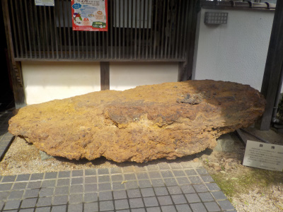
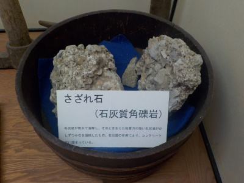
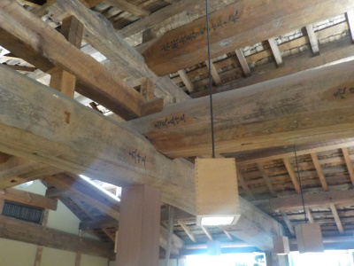
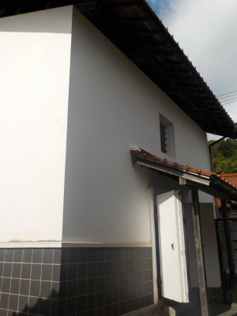
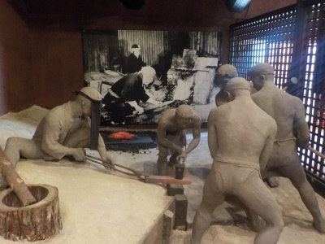
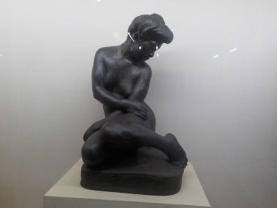
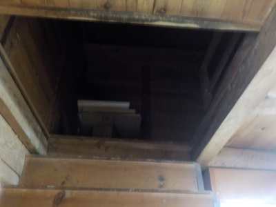

鉄の歴史博物館でたたらの勉強をしましょう。
2019/10/22
ここに来たらビデオを見ましょう。たたらとはどんなものかが分かります。
でも大人向けな内容です。子供には難しいので耐えれないと思います。

入口には大きい鉄の塊があります。

なぜか「さざれ石」もありました。
さざれ石を初めてみたので感動しました。これがあのさざれ石なんだ。
これの大きいやつを見てみたいけど、遠くに行かないと無理だろうなー。

天井です。立派なお屋敷ですね。こうゆうのって都会の人が喜びそう。
田舎者は見飽きました。

倉も見ることありますが、ここでは中に入れます。
倉の中にはなかなか入れないのでちょっと貴重な体験でした。

博物館にありそうな人形です。こうゆうのって作るの大変そうですよね。

地元出身の彫刻家 内藤伸さんの資料館もありました。

内藤伸さんの倉には2階にあがる階段がありました。
倉の様子がよくわかって良かったです。
ビデオに本館、別館、倉2つ、お庭と見るものが色々ありました。いい勉強になりました。